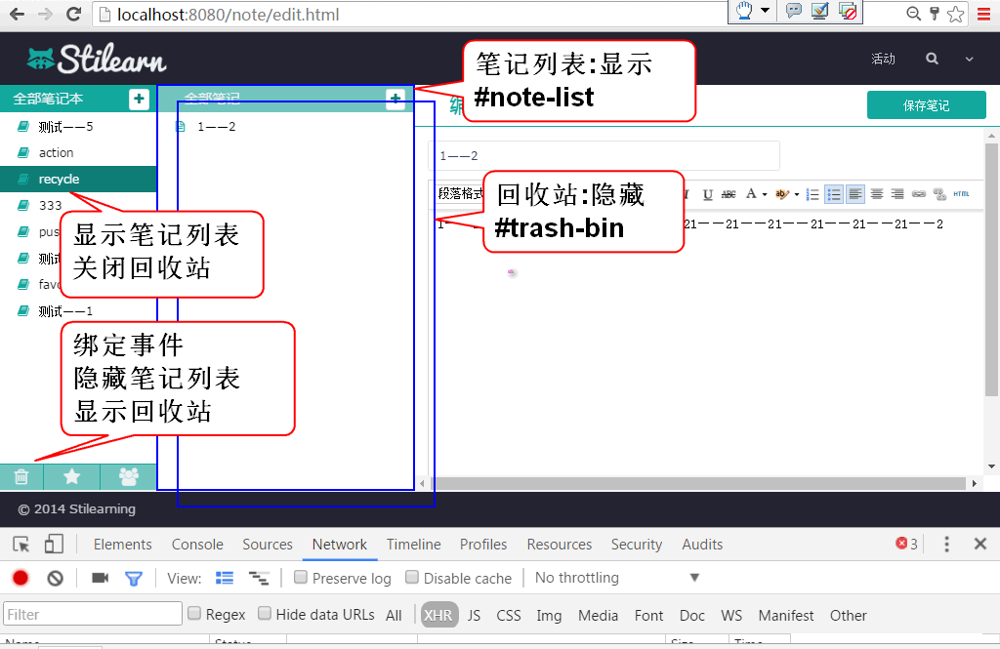

原理:

重构 edit.html 为回收站和回收站按钮设置ID
重构 118 行, 设置 id='trash-bin'
<div class="col-xs-3" style='padding:0;display:none;' id='trash-bin'>
重构 81 行, 设置 id='trash_button'
<div class="col-xs-4 click" id='trash_button' title='回收站'><i class='fa fa-trash-o' style='font-size:20px;line-height:31px;'></i></div>
在ready方法中绑定按钮事件:
//监听回收站按钮被点击
$('#trash_button').click(showTrashBin);
添加事件处理方法:
/** 监听回收站按钮被点击 */
function showTrashBin(){
$('#trash-bin').show() ;
$('#note-list').hide() ;
//loadTrashBin(); 加载删除笔记列表
}
添加数据访问方法 NoteDao
List<Map<String, Object>> findDeleteNotesByUserId(String userId);
添加SQL NoteMapper.xml
<select id="findDeleteNotesByUserId"
parameterType="string"
resultType="map">
select
cn_note_id as id,
cn_note_title as title
from
cn_note
where
cn_user_id = #{userId} and
cn_note_status_id = '0'
order by
cn_note_last_modify_time desc
</select>
测试
...
添加业务层方法 NoteService
List<Map<String, Object>> listNotesInTrashBin(String userId) throws UserNotFoundException;
实现业务层方法 NoteServiceImpl
public List<Map<String, Object>> listNotesInTrashBin(
String userId) throws UserNotFoundException {
if(userId==null||userId.trim().isEmpty()){
throw new UserNotFoundException("ID空");
}
User user=userDao.findUserById(userId);
if(user==null){
throw new UserNotFoundException("木有人");
}
return noteDao.findDeleteNotesByUserId(userId);
}
测试
...
添加 loadTrashBin 方法利用Ajax加载回收站笔记列表:
/** 加载回收站中的笔记列表 */
function loadTrashBin(){
var url = 'note/trash.do';
var data = {userId: getCookie('userId')};
$.getJSON(url, data, function(result){
if(result.state==SUCCESS){
showNotesInTrashBin(result.data);
}else{
alert(result.message);
}
});
}
添加显示笔记列表到回收站方法 showNotesInTrashBin
function showNotesInTrashBin(notes){
var ul = $('#trash-bin ul');
ul.empty();
for(var i=0; i<notes.length; i++){
var note = notes[i];
var li = trashBinItem.replace('[title]', note.title);
li = $(li);
li.data('noteId', note.id);
ul.append(li);
}
}
var trashBinItem =
'<li class="disable">'+
'<a><i class="fa fa-file-text-o" title="online" rel="tooltip-bottom"></i>'+
' [title]'+
'<button type="button" class="btn btn-default btn-xs btn_position btn_delete">'+
'<i class="fa fa-times"></i>'+
'</button>'+
'<button type="button" class="btn btn-default btn-xs btn_position_2 btn_replay">'+
'<i class="fa fa-reply"></i>'+
'</button></a>'+
'</li>';
其中 trashBinItem 是回收站笔记项目的模板
重构 showTrashBin 方法, 在显示回收站后加载以删除笔记列表
/** 监听回收站按钮被点击 */
function showTrashBin(){
$('#trash-bin').show() ;
$('#note-list').hide() ;
loadTrashBin();// 加载已删除笔记列表
}
测试
...
略
声明业务方法 NoteService
boolean replayNote(String noteId, String notebookId)
throws NoteNotFoundException, NotebookNotFoundException;
实现业务方法 NoteServiceImpl
public boolean replayNote(String noteId, String notebookId)
throws NoteNotFoundException, NotebookNotFoundException {
if(noteId==null || noteId.trim().isEmpty()){
throw new NoteNotFoundException("ID不能空");
}
Note note = noteDao.findNoteById(noteId);
if(note==null){
throw new NoteNotFoundException("没有对应的笔记");
}
if(notebookId==null||notebookId.trim().isEmpty()){
throw new NotebookNotFoundException("ID空");
}
int n=notebookDao.countNotebookById(notebookId);
if(n!=1){
throw new NotebookNotFoundException("没有笔记本");
}
Note data = new Note();
data.setId(noteId);
data.setStatusId("1");
data.setNotebookId(notebookId);
data.setLastModifyTime(System.currentTimeMillis());
n = noteDao.updateNote(data);
return n==1;
}
测试
...
添加控制器方法 NoteController
@RequestMapping("/replay.do")
@ResponseBody
public JsonResult replay(String noteId, String notebookId) {
boolean b = noteService.replayNote(
noteId, notebookId);
return new JsonResult(b);
}
测试
...
在ready方法中添加事件监听方法, 打开恢复对话框:
//恢复笔记到笔记本按钮事件监听
$('#trash-bin').on(
'click', '.btn_replay', showReplayDialog);
添加事件方法
/** 显示恢复笔记对话框 */
function showReplayDialog(){
var li = $(this).parent().parent()
var id = li.data('noteId');
$(document).data('replayItem', li);
if(id){
$('#can').load('alert/alert_replay.html', loadReplayOptions);
$('.opacity_bg').show();
return;
}
alert('必须选择笔记!');
}
提示: 需要在事件中保存 li 到 document中, 在恢复时候需利用这个li获取被恢复的笔记ID
添加方法loadReplayOptions, 在显示窗口以后加载笔记本列表到恢复对话框中:
function loadReplayOptions(){
var url = 'notebook/list.do';
var data={userId:getCookie('userId')};
$.getJSON(url, data, function(result){
if(result.state==SUCCESS){
var notebooks = result.data;
//清楚全部的笔记本下拉列表选项
//添加新的笔记本列表选项
$('#replaySelect').empty();
var id=$(document).data('notebookId');
for(var i=0; i<notebooks.length; i++){
var notebook = notebooks[i];
var opt=$('<option></option>')
.val(notebook.id)
.html(notebook.name);
//默认选定当时笔记的笔记本ID
if(notebook.id==id){
opt.attr('selected','selected');
}
$('#replaySelect').append(opt);
}
}else{
alert(result.message);
}
});
}
监听恢复对话框中的确定方法:
$('#can').on('click', '.btn-replay', replayNote);
添加事件处理方法
function replayNote(){
var li = $(document).data('replayItem');
var id = li.data('noteId');
var url = 'note/replay.do';
var nid = $('#replaySelect').val();
var data = {noteId: id, notebookId:nid};
$.post(url, data, function(result){
if(result.state==SUCCESS){
closeDialog();
li.slideUp(200, function(){$(this).remove()});
}else{
alert(result.message);
}
});
}
提示: li对象为显示对话框事件中保存到document对象的li.
提示: li.slideUp 方法可以为删除li时候添加动画效果, 这样增加视觉效果可以提高用户的体验.
测试
原理
重构 登录控制器, 登录以后将用户信息保存到Session, UserController
@RequestMapping("/login.do")
@ResponseBody
public Object login(
String name, String password,
HttpSession session){
User user = userService.login(
name, password);
//登录成功时候, 将user信息保存到session
//用于在过滤器中检查登录情况
session.setAttribute("loginUser", user);
return new JsonResult(user);
}
添加权限检查过滤器:
public class AccessFilter implements Filter {
public void destroy() {
}
private String login = "/log_in.html";
public void doFilter(ServletRequest request, ServletResponse response, FilterChain chain) throws IOException, ServletException {
HttpServletRequest req =
(HttpServletRequest)request;
HttpServletResponse res =
(HttpServletResponse)response;
HttpSession session = req.getSession();
//放过 log_in.html
String path = req.getRequestURI();
System.out.println("access:"+path);
if(path.endsWith(login)){
chain.doFilter(request, response);
return;
}
//放过 alert_error.html
if(path.endsWith("alert_error.html")){
chain.doFilter(request, response);
return;
}
//检查用户是否登录
User user = (User)session
.getAttribute("loginUser");
//如果没有登录就重定向到 登录页
if(user==null){//没有登录
//重定向到登录页
res.sendRedirect(
req.getContextPath()+login);
return;
}
//如果登录就放过
chain.doFilter(request, response);
}
public void init(FilterConfig fConfig) throws ServletException {
}
}
在web.xml 中配置过滤器:
<filter>
<display-name>AccessFilter</display-name>
<filter-name>AccessFilter</filter-name>
<filter-class>cn.tedu.note.web.AccessFilter</filter-class>
</filter>
<filter-mapping>
<filter-name>AccessFilter</filter-name>
<url-pattern>*.html</url-pattern>
</filter-mapping>
测试
添加拦截器Bean
@Component
public class AccessInterceptor implements
HandlerInterceptor {
public boolean preHandle(
HttpServletRequest req,
HttpServletResponse res,
Object handle) throws Exception {
String path=req.getRequestURI();
System.out.println("Interceptor:"+path);
HttpSession session = req.getSession();
User user = (User)session
.getAttribute("loginUser");
//如果没有登录就返回错误的JSON消息
if(user==null){
JsonResult result =
new JsonResult("需要重新登录!");
//利用response 对象反馈结果
res.setContentType(
"application/json;charset=UTF-8");
res.setCharacterEncoding("UTF-8");
ObjectMapper mapper =
new ObjectMapper();
String json=mapper
.writeValueAsString(result);
res.getWriter().println(json);
res.flushBuffer();
return false;
}
//如果登录了就放过请求
return true;//放过请求
}
public void postHandle(HttpServletRequest arg0, HttpServletResponse arg1, Object arg2, ModelAndView arg3)
throws Exception {
}
public void afterCompletion(HttpServletRequest arg0, HttpServletResponse arg1, Object arg2, Exception arg3)
throws Exception {
}
}
配置拦截器 spring-mvc.xml
<!-- 扫描拦截器组件 -->
<context:component-scan
base-package="cn.tedu.note.web"/>
<!-- 拦截器bean的ID是accessInterceptor -->
<!-- 配置拦截器 -->
<mvc:interceptors>
<mvc:interceptor>
<mvc:mapping path="/note/*"/>
<mvc:mapping path="/notebook/*"/>
<ref bean="accessInterceptor"/>
</mvc:interceptor>
</mvc:interceptors>
测试...
在ready中添加心跳检查方法:
startHeartbeat();
实现心跳检查方法:
function startHeartbeat(){
var url = "user/heartbeat.do";
setInterval(function(){
$.getJSON(url, function(result){
console.log(result.data);
});
}, 5000);
}
添加控制器处理心跳检查 UserController
@RequestMapping("/heartbeat.do")
@ResponseBody
public JsonResult heartbeat(){
Object ok = "ok";
return new JsonResult(ok);
}